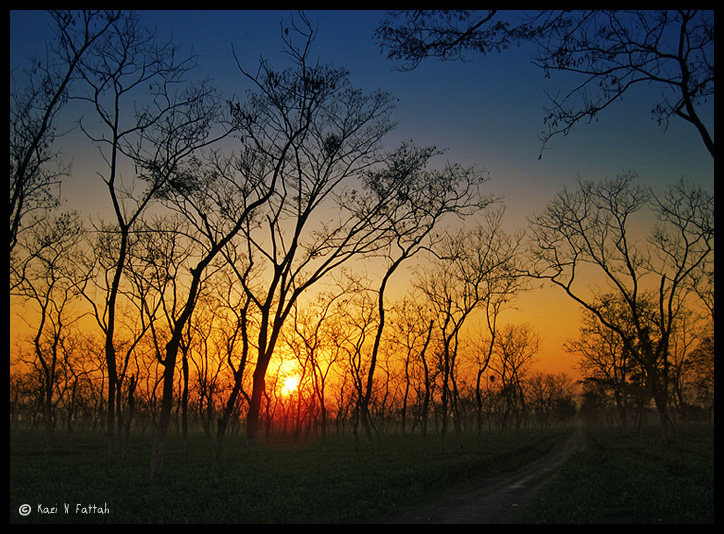

Sylhet
Sylhet and Srimangal only for $300

Sylhet is a metropolitan city in northeastern Bangladesh. It is the administrative seat of Sylhet Division. The city is located on the right bank of the Surma River in northeastern Bengal. It has a subtropical climate and lush highland terrain. Sylhet has a "Friendship Link" with the city of St Albans in the United Kingdom. The link was established in 1988 when the District council supported a housing project in Sylhet as part of the International Year of Shelter for the Homeless.
It is said the name Sreemangal (or Srimangal) is named after Sri Das and Mangal Das; two brothers who settled on the banks of the Hail. The closest Manipuri village to Srimangal is Ramnagar. Local tours will usually include a trip here, but you can also walk here yourself.Plantation in Srimangal & Around The sprawling Finlays Tea Estate, just on the edge of Srimangal, is easily accessible, and you can step into the bushes and interact with tea pickers once you have taken prior permission from the estate office by the Srimangal–Bhanugach road. The gardens also spill over to the other side of the road from the estate office.
Combo Deals
Sylhet + Srimangal + Jaflong only for $350
Book Now
Package will cover hotel cost,meals and selected destinantion travel expense. This package is for 2 nights and 3 days.